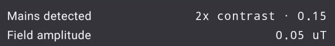
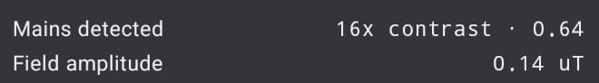
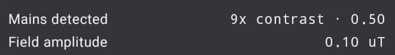
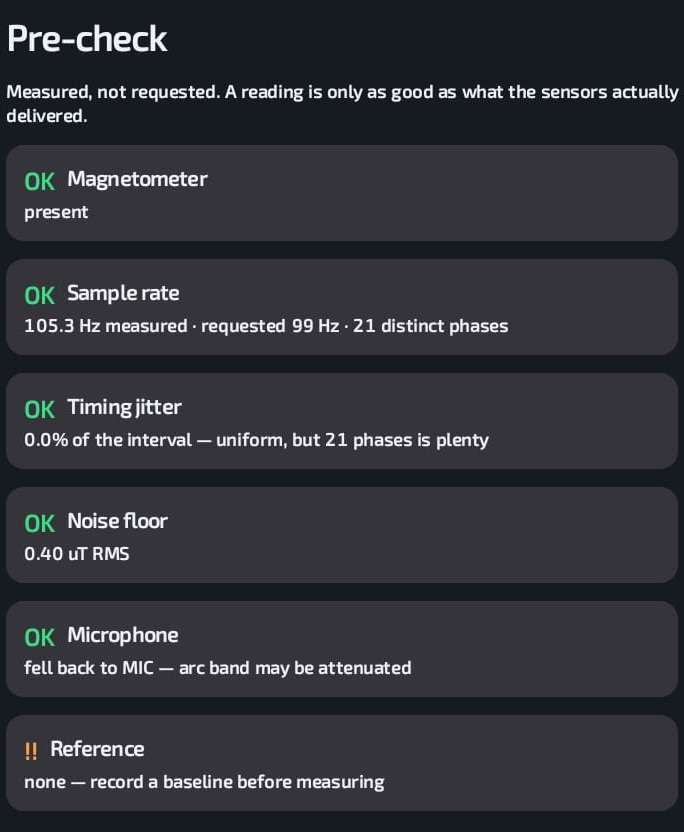

A phone can tell you whether a wire is carrying current — from three centimetres away, touching nothing, with the radio off.
Goutham Pakala · Geetha Tigulla
Phase 1 idea submission
The threshold moved to 6× because of this plot. The previous value, chosen from simulation, sat close enough to the idle readings that a dead circuit could read as live.
One capture in the lower lane read 1×, taken before the compressor had started. We set it aside on an explanation formed after the fact, and the separation depends on that being right.
Two pairs, minutes apart. The phone was taped down and never touched; the only thing that changed in the room was a switch at the wall.



Both numbers come off the device, not from a model. Field amplitude 0.05 µT idle against 0.10–0.14 loaded, on a noise floor measured at 0.40.
What this does not show is a sensitivity figure. One appliance, roughly 1–1.5 A, through a cable whose live and neutral largely cancel.
B = μ₀I / 2πr
Five amperes at three centimetres produce about 33 µT. Earth's field is 45. The signal is the same order as the planet — it was never too small to see.
100 Hz = 2 × mains
A series arc re-ignites twice per cycle, modulating its noise at 100 Hz. Against a ballast hum, speech, a sleeve and a motor, a plain energy detector fired on every one. Ours held its 5% design point.
A clamp meter, a thermal camera and an arc-fault analyser are what make a loose connection visible before it starts a fire. For a two-person electrical firm that is a capital outlay they cannot justify — so the tools stay with large contractors, and the buildings that most need checking never get checked.
Every one of those electricians already carries a magnetometer and a microphone.
What it replaces, partly
Taar reports a relative index, not amperes, unless the circuit has been calibrated against a known load.
The app passed every check we had written and still returned nothing on a real phone. These four only appeared once it was installed.
A simulation that had predicted any of these would have been a better simulation. It did not — which is the case for building early and putting it on the hardware.
06
Per-axis sine fit at 50 Hz, detrended, amplitude as the vector sum. Lomb–Scargle contrast against 30–48 and 52–70 Hz. Scoring by median and MAD against the circuit's own reference.
A rules table that shows its evidence. A nearest-centroid classifier trained on the device from the technician's labels, which rejects rather than guessing. No language model is built; one is planned for the build window.
It does not replace a licensed electrician, a calibrated clamp meter, an insulation tester or a statutory inspection. The app says so on the result screen, not in a settings page.
No real arc has been recorded. The magnetometer half rests on textbook physics and now on measurement; the arc half rests on neither yet, and we will say so on stage before a judge asks.
Unless the circuit has been calibrated against a known load. A fabricated ampere figure is worse than no figure.
With no reference, or an ill-conditioned fit, it returns a refusal. An electrician acting on a confident wrong reading is the worst outcome this project has, and the code is arranged so that outcome is unreachable.
Our pre-event work is a research spike on a separate branch, rebuilt from an empty scaffold inside the event window and never merged. The protocol is written down, and we will confirm it with an organiser at check-in.
0801
Off. Phone taped to the cable. Measure. No mains detected.
02
On. Nothing in the room moves but a switch. Measure again.
03
The jump. The contrast number is the demo. Everything else is set-up.
Yesterday it was a claim.
Today there are six captures behind it.
Taar · Against Default
Goutham Pakala · Geetha Tigulla